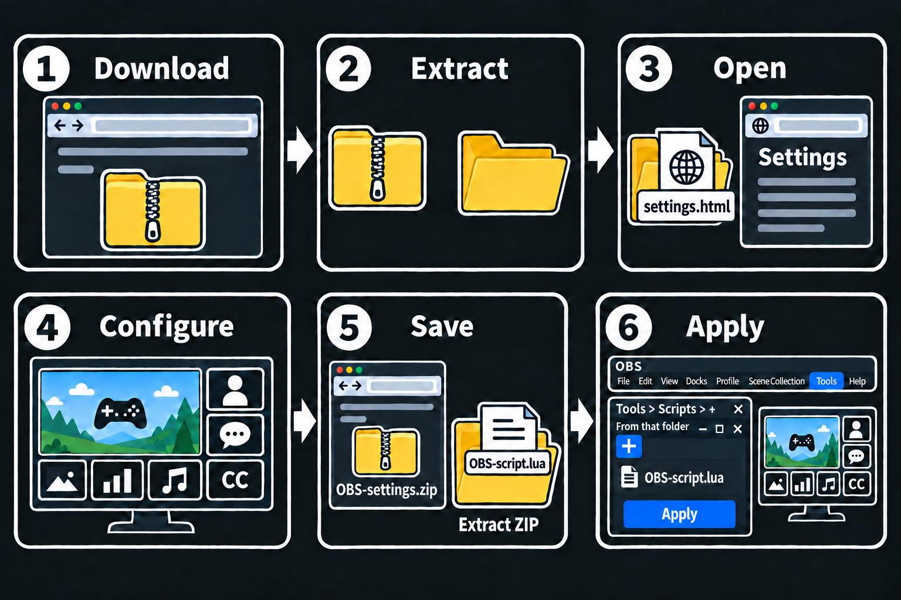

設定とOBSの接続
まず図の順序で進めます。詳しく確認する場合は下の見出しを開いてください。
クイックスタート

- 1配布ZIPをダウンロード
- 2ZIP全体を展開
- 3settings.htmlを開く
- 4パネルとコンテンツを設定
- 5ZIP で保存 → 全体を展開
- 6Lua追加 → ソース選択 → 適用
必須の設定
1. OBSを準備
OBS Studio 30.1以上でブラウザソースとツール → スクリプトが利用できることを確認します。
設定 → 映像で基本キャンバスを1920 × 1080にします。本番プロファイルが別のサイズなら、今回用の別プロファイルを作成または選択してください。本番プロファイルを勝手に変更しないでください。
2. 配布ファイルを開く
配布ファイル ALO4OBS-v0.9.1.zipをすべて展開し、ルートの settings.htmlを開きます。このファイルは files/settings.htmlを開きます。ZIP内のHTMLを直接開かないでください。
3. パネルとコンテンツを選択
Main・Sub 1–3・Side 1–3からパネルを選び、コンテンツの種類をなし・OBS ソース・Web URL・画像/動画から選択します。用途はゲーム・チャット・カメラに固定されていません。
OBS ソースでは、まずOBSに個別のキャプチャやカメラを作成し、映像を確認します。シーンとグループはパネルソースに選べません。Web URLには提供元のOBS表示用URLを入力します。画像/動画ではファイルをアップロードするか、直接メディアURLを入力します。動画視聴ページのURLはメディアファイルではありません。
4. 配置とスタイルを設定
Mainは常に有効です。SubとSideの数を選ぶと、Subは左から、Sideは上から表示されます。Main/Subの上下、Side列の位置、サイズ、間隔、塗り、枠線を設定します。プレビューで配置を確認します。サンプルは実アカウントに接続されず、元のOBSキャプチャもプレビューには表示されません。
5. 個人ZIPを保存・展開
ZIP で保存を押します。英語は Save as ZIP、韓国語は ZIP 파일로 저장です。結果は個人用パッケージ OBS-settings.zipです。配布ファイル ALO4OBS-v0.9.1.zipと区別してください。
OBS-settings.zipを新しい常設フォルダーにすべて展開します。OBS-script.lua、JSON設定、マスク、assets/と実行用ファイルを一緒に保管します。スクリプト自身のフォルダーを基準に読み込むため、Luaだけ移動すると参照が壊れます。OBS実行用パッケージには設定エディターは含まれません。
6. OBSに接続して確認
OBSのツール → スクリプト → +から、展開した個人フォルダーの OBS-script.luaを選択します。英語の操作画面にする場合は English UI (reload after changing)をオンにしてスクリプトを再読み込みします。
表示するOBS ソースパネルごとに、同名のMain/Sub/Side選択欄で元のソースを選びます。別パネルには異なるソースを指定します。空の選択欄で意図的に空パネルにもできます。Apply saved settings / Auto layoutを押します。韓国語のボタンは저장한 설정 / 자동 배치 적용です。
生成されたALO4OBSシーンでキャプチャ、カメラ、Webウィジェット、メディアを確認してから配信に使います。設定プレビューで確認できるのは配置です。ブラウザーの変更はOBSに自動反映されません。ZIP再保存 → 全体を展開 → 新しいスクリプトパスを登録、または適用フォルダーを更新して再読み込み → ソース選択確認 → 適用が必要です。
追加のヒント
配置コントロール
7つの枠は Main、Sub 1～3、Side 1～3 です。用途はゲーム・チャット・カメラなどに固定されていません。各パネルでなし・OBS ソース・Web URL・画像/動画を選び、スタイルを設定します。プレビューのパネル名は枠を見分けるための表示で、OBS出力には出ません。サンプルは実際のアカウントに接続されません。
初期配置では、Main と Sub 1～3 は左フレームに、Side 1～3 は右フレームに上から順に並びます。Main は常に有効です。Sub の数とSide の数のスライダーで、それぞれ 1・2・3 個を選びます。Sub は左から、Side は上から選んだ数だけ表示されます。Main と Sub の上下を入れ替えスイッチで、2 つの行の上下を変更します。Side 列を左に配置をオンにすると、Side 列全体が左に、Main・Sub フレームが右に移動します。Side 1～3 の上からの順序は変わりません。
全体設定の間隔は、パネル同士の間隔と画面端の余白をまとめて決めます。とても狭い 8px・狭い 16px・標準 24px・広い 32px（初期値）・とても広い 48px から選びます。Side フレームは左右どちらに配置しても幅 440px を保ち、Main・Sub フレームが残りを使います。
Side 1～3 の高さと Sub 1～3 の幅を自動または手動に設定できます。Main と Side の幅は常に自動です。自動は残りの空間を埋め、手動は数値入力またはスライダーで指定したピクセルサイズを維持します。有効なパネル、間隔、他の手動サイズに応じて入力範囲が更新されます。有効な Sub がすべて手動で幅の合計がフレームと合わない場合、サイズは変えずに Sub の幅設定の近くに空きスペースまたははみ出しの警告を表示します。はみ出していても保存と OBS への適用はでき、画面では Sub の幅がフレームに収まるよう縮みます。
同じブラウザーで同じ設定ページを再度開くと、アップロードした画像・動画が復元されることがあります。ブラウザーデータを削除する前やファイルを移動する前に設定 ZIP を保存してください。
Sub の最小幅は 16:9 の基準配置の行の高さです（標準 206px）。その他の範囲は現在の自動サイズの50〜150%、フレーム境界、他のパネルの空間で決まります。Sub の高さは自動です。Main は自動・16:9（標準）・21:9・32:9 を選択します。自動は Sub の行を除く残りの高さを埋めます。もう一方の寸法から計算する 1:1・16:9 の目盛り付近にドラッグすると、その比率に合わせます。数値とキーボードは正確な値を使用します。
OBSバージョンと検証範囲
スクリプトは30.1で追加された obs_sceneitem_get_info2 / obs_sceneitem_set_info2を使用します。30.1はAPIの最低バージョンです。下記の隔離したWindows OBS 32.2.2での移行検証に合格しました。このバージョンのmacOS検証は未完了です。
既存ALO4OBSを更新
更新前にOBSシーンコレクションを書き出し、旧適用フォルダー全体をバックアップし、パネルごとのスクリプトのソース選択を記録します。旧パッケージをそのまま残し、新しい配布ZIPは別フォルダーに展開します。
設定エディターはJSONインポートではなく config.jsを読みます。旧スクリプトの適用に成功すると個人用フォルダーに生成される config.jsを、新配布の files/にコピーします。その assets/...パスで参照する個人メディアだけを、同じ相対パスでコピーします。新しい config.public.js、内部スクリプト、フォントは置換しません。config.jsがなければ旧版で一度適用して生成するか、旧環境を残して新バージョンを手動設定します。JSONの名前変更はインポート手順ではありません。新パスでのブラウザー下書き復元は保証されません。
新しいルートの settings.htmlで値とメディアを確認し、新しい OBS-settings.zipを保存して新しい常設フォルダーに展開します。選択を記録した後、旧Luaの登録だけを解除します（シーンは削除されません）。新しいLuaパスを追加し、適用前に元のソースを再選択します。新規登録はJSONから旧選択欄の値を引き継ぎません。
旧OSTから切り替え
旧OBS Streaming Templateシーン、OST ·グループ、元ソース、スクリプトフォルダー全体を残します。シーンコレクションを書き出し、選択を記録してから旧スクリプトの登録だけを停止・解除します。Luaとバックアップは保管します。同じ元ソースで新版を設定し、新スクリプトを追加してソースを再選択して適用します。
新しいALO4OBSシーンは別に作成されます。確認してから切り替え、旧シーンは復旧用に残します。OSTシーンの自動移行はありません。ソースやグループを一括削除しないでください。
復旧と検証範囲
適用はALO4OBSシーンと ALO ·項目を再利用し、元ソースの設定・フィルターを保持する設計です。テンプレートのシーン項目の位置・サイズ・配置は保存値で再適用します。下記の隔離したWindows OBS 32.2.2での移行・保持検証に合格しました。実際の失敗後の復旧は未検証です。自動状態テストとは別の証拠です。
Windows OBS 32.2.2の隔離したportableコピーで検証用プロファイルとシーンコレクションを使用しました。0.9.0個人ZIPを適用し、生成されたconfig.jsと参照するアップロードPNGだけを0.9.1配布フォルダーに移し、新しい個人ZIPを適用しました。元のカラーソース設定とユーザーのカラーフィルター、別シーン項目の位置、旧OSTシーンとグループの保持を確認しました。ALO4OBSシーンの再利用、Mainの元ソース再接続、再適用時の重複なし、メディアの新しいlocal_fileパスを確認し、実際のOBS画面にPNGのオレンジ領域が表示されました。Chrome HTTPでも保存・再表示と10設定グループの一致を確認しました。個人Webウィジェット、実カメラ、実キャプチャ、配信、macOS、file://設定エディター、OSファイル選択画面、実際の失敗後の復旧は未検証です。
ALO4OBS更新を戻す場合は、更新前のシーンコレクションのバックアップを別の復旧用コレクションにインポートします。現在のコレクションは上書きしないでください。バージョンが一致する旧Luaスクリプトと旧適用フォルダー全体を復元し、元ソースの割り当てを確認します。更新は同じALO4OBSシーンを再利用し、生成したブラウザソースの local_fileを新フォルダーのパスに変更します。同じシーンを選び旧Luaを登録するだけでは旧状態に戻りません。保存した旧シーンへの直接切り替えは、旧OSTシーンが別に残るOST並行移行にのみ該当します。更新前のシーンコレクションと適用フォルダー全体のバックアップがなければ、完全な復旧は保証できません。実際の失敗後の復旧は未検証です。実行中の復旧スナップショットは同じスクリプト・バージョンでのみ使えます。HTTPプレビューだけでは直接ファイル実行、OSの展開・ファイル選択画面、macOS対応を検証できません。
予約名と共有ソース
他のシーンは直接編集しませんが、生成された ALO ·ソース・グループを他のシーンで使うと更新後の内容を共有します。無効にしたグループの元ソースは非表示の最上位項目として残ります。予約名の衝突が表示されたら対象を確認し、必要ならバックアップに戻してください。無関係なソースをむやみに削除しないでください。
Webウィジェットのアドレスはどこで取得できますか？
チャット・翻訳・通知・寄付など、利用するサービスのOBS表示用ウィジェットURLをコピーし、選んだパネルのWeb URLに入力します。サービスの設定画面と表示用URLは異なることがあります。ウィジェット内の文字・色・音・稼働状態は提供元で設定します。
URLに非公開トークンが含まれることがあるため、設定ZIPは公開しないでください。
OBS ソースや画像・動画を使うには？
まずOBSにキャプチャ・カメラ・メディアなどの個別映像ソースを作成します。シーンとグループはパネルソースとして選択できません。使用するパネルをOBS ソースにし、スクリプトの該当パネル名でソースを選びます。同じソースを2枠に重複指定することはできません。ファイルは画像/動画でアップロードするか、直接メディアURLを入力します。通常の動画視聴ページのアドレスはメディアファイルのURLではありません。
フレーム構造、角のマスク、OBS上の位置はどのように動作しますか？
左右のフレームと間隔の設定が7つのパネルの位置を決めるため、座標を数値で編集する必要はありません。OBS上で手動移動した位置は、次に自動レイアウトを適用すると保存済みの位置に戻ります。元のOBS ソース設定を残す設計で、アルファマスクはテンプレート専用グループに適用されます。同じ設定を再適用してもテンプレートのソースは重複作成されません。
プレビューが空白、またはOBSに古い設定が表示されます
- ブラウザーがローカルファイルへのアクセスを制限すると、一部のプレビューが空白になることがあります。設定入力とZIP保存は引き続き使えます。OBSで確認してください。
- 新しいZIPを保存して全体を展開し、新しいパスの登録または適用フォルダーの更新・再読み込み、ソース選択確認、適用を行います。必要に応じてOBSブラウザーソースのキャッシュを更新してください。
- WebウィジェットはOBS表示用URLか確認してください。提供元のプログラムやチャンネルが停止していると何も表示されないことがあります。
個人用リンクを共有してもよいですか？
ウィジェットURLには非公開トークンが含まれる場合があります。設定ファイルや設定ZIPを公開リポジトリやチャットに投稿しないでください。